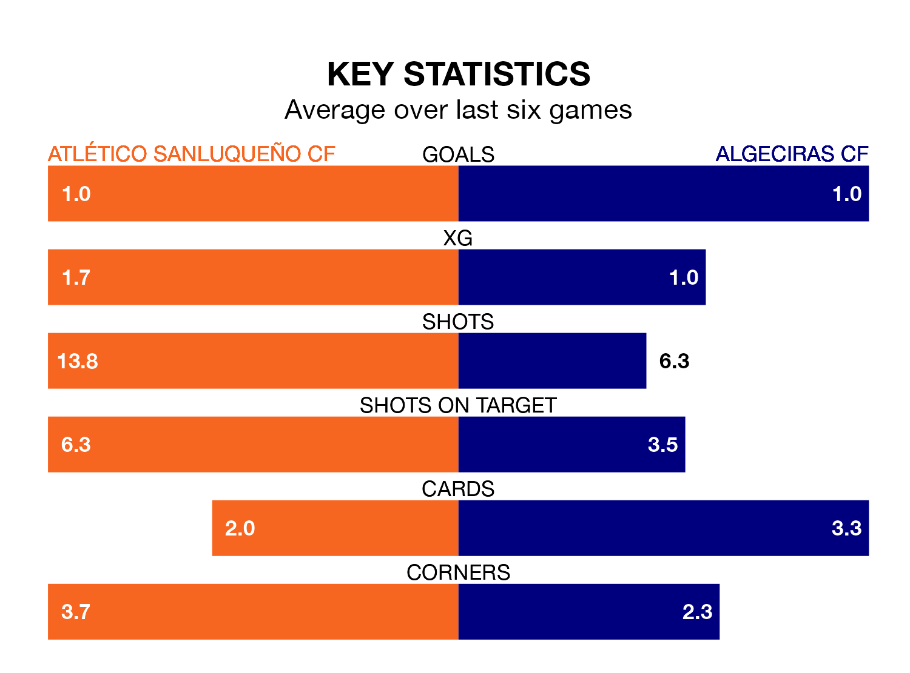

Atlético Sanluqueño CF face Algeciras CF on Sunday seeking to protect their long unbeaten run in Primera Division RFEF Group 2.
Atlético Sanluqueño are unbeaten in five, with three wins and two draws, ahead of the 5pm kick-off.
They face an Algeciras team who have won two and drawn two over the same number of games.
In the last 10 years, Atlético Sanluqueño and Algeciras have played each other on seven occasions. Atlético Sanluqueño won five of them, Algeciras one, and they drew once.
On average, Atlético Sanluqueño scored 1.9 goals and Algeciras 1.1 in those matches.
Their last meeting was on October 1, when they played out a 1-1 draw.
With 26 goals in 24 games so far this season, Algeciras are scoring at the league's average rate with 1.1 goals per game. And they are conceding fewer than average, letting in 21 goals at a rate of 0.9 per game.
Atlético Sanluqueño are also average scorers, with 1.1 goals per game. They have also conceded 1.1 goals per game.
The visitors are sixth in the table after 24 games, of which they have won nine and drawn eight, earning 35 points.
The home team are seven places behind Algeciras in 13th, with seven wins and eight draws putting them on 29 points.
In Francisco Mwepu, Atlético Sanluqueño have one of the league's most on-form strikers so far this season. He has notched seven goals in 21 appearances, to sit sixth in the scoring charts.
Algeciras's top scorers, with three goals each, are Javier Cueto Suárez, Iván Turrillo Caballero, Ezequiel Díaz Romero, Diego Esteban Pérez and Eric Montes Arce.
Atlético Sanluqueño's last match was on Sunday, a 1-0 win against Granada B, with Joan Rojas Castilla getting the goal for Atlético Sanluqueño.
Algeciras beat Real Madrid B 3-0 last time out, on February 17, with Javier López Pinto Dorado (two) and Turrillo Caballero on the scoresheet.
Updated: 12:18 (UTC), 19/02/24